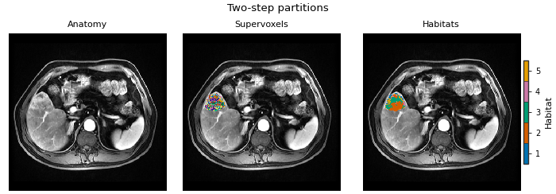
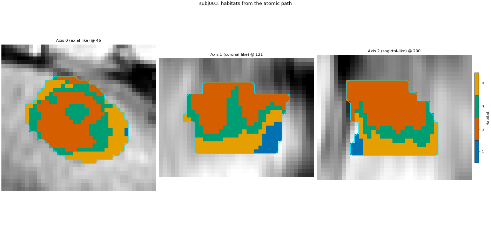

备注
转到文末 可下载完整示例代码。
由原子组件构建两步法生境#
背景。 用 Spec 的两步法生境 在一个 HabitatSpec 中声明整项生境研究，并用一次 Study(spec).fit_predict(...) 运行（串行 RunPolicy ，受试者失败时 continue）。该调用背后是一组普通 Python 对象：体素特征提取器、两条预处理链、超体素化器、生境模型拟合器、分配器与四个生境特征提取器。它们均为公开 API，可在单受试者、内存中调用，无需 spec、YAML 或输出文件夹。
目的。 你将用组件重建 用 Spec 的两步法生境 的已批准两步法分析（两名训练患者、四个 DCE 期、ROI LAP 、seed 0），以 plain 逐受试者循环实现。然后 Study 运行相同 spec，页面检查两路径体素级生境标签、model id 与特征表一致。最后 atomic 路径标注第三名新患者，并将 atomic 模型交给 Study.from_model 再次标注同一患者。
何时使用。 想看清 Study 内部，或只需在自有流水线（MONAI 变换链、notebook、服务）中单步执行且不要 HABIT 编排时。常规研究用 Study 更短且会记录运行清单。
分析定义。 经审定的两步法定义保持不变：四个时相的原始强度、受试者级 winsorize + z-score、30 个 k-means 超体素、队列级 10 箱均匀分箱、按肘部法则在 2..10 个生境中选择的 k-means、最近质心分配，随后提取体积、MSI、ITH 与图特征。定义本身不变；变化的只是各步骤的调用方式。
关键术语。 完整定义见 概念 。
体素场 — 单受试者体素特征表（每 ROI 体素一行、每特征一列），以及各体素在图像中的位置。
subject-level chain — 使用各患者自身统计的预处理；无拟合状态，直接调用。
supervoxelization — 单受试者的超体素标签图及每超体素一行特征。
队列级链 —— 在池化训练行上拟合一次的预处理；拟合状态须与模型一并存储。
fitter / model / assigner — 拟合器从池化行学习质心并返回
HabitatModel；模型的 assigner 将生境 id 绘制到单受试者。habitat feature extractor — 将单受试者生境图变为特征表的一行。
Study 为你做的两件事此处也会做，只是不那么显眼。其一，将每个 ROI 掩膜对齐到图像网格；原始体素特征提取器自行完成（演示掩膜与图像 origin/direction 不同），直接调用提取器得到相同对齐体素。其二， Study 用 spec.random_seed 为每个随机组件设种子；下文对每个组件 set_random_state(0) ，故两路径可比特一致。
加载队列#
与 Spec 页相同的数据与划分：两名训练患者（subj001、subj002）与一名新患者（subj003）。sphinx_gallery_thumbnail_number = 1
from pathlib import Path
import matplotlib.pyplot as plt
import numpy as np
import pandas as pd
from habit.contracts import cohort_from_directory
from habit.datasets import fetch_demo
from habit.feature_preprocessing import (
ZScoreScaling,
SubjectPreprocessingChain,
Winsorizing,
)
from habit.habitat_features import (
GraphHabitatFeatures,
HabitatVolumeFeatures,
IthHabitatFeatures,
MsiHabitatFeatures,
)
from habit.habitat_model import KMeansHabitatModelFitter
from habit.execution import backend_from_policy
from habit.recipes import Study
from habit.spec import HabitatSpec, Spec, Stage
from habit.spec.policy import RunPolicy
from habit.supervoxel import KMeansSupervoxelizer
from habit.viz import plot_habitat_overlay, plot_partition_triptych
from habit.voxel_features import RawVoxelFeatures
# Change DATA / MODALITIES / ROI to your preprocessed layout.
DATA = fetch_demo()
MODALITIES = ("pre_contrast", "LAP", "PVP", "delay_3min")
ROI = "LAP"
cohort = cohort_from_directory(DATA, modalities=MODALITIES, roi=ROI)
train, new_patient = cohort[:2], cohort[2:3]
# The one seed used for every random step. Study uses spec.random_seed.
SEED = 0
Path("out").mkdir(exist_ok=True)
HABIT demo data (cached)
DATA (preprocessed root): C:\Users\dongm\.habit_data\demo-data-v1\preprocessed
On-disk inventory of this folder:
subjects (5): subj001, subj002, subj003, subj004, subj005
image series: LAP, PVP, delay_3min, pre_contrast
mask keys: LAP, PVP, delay_3min, pre_contrast
example image: images/subj001/delay_3min/WATER__BH_Ax_LAVA_Flex_3min_Series0012.nrrd
example mask: masks/subj001/delay_3min/WATER__BH_Ax_LAVA_Flex_10min_Series0017_mask.nrrd
Your own data must use the same folder tree (change IDs / series names):
DATA/
images/<subject_id>/<modality>/<one image file>
masks/<subject_id>/<roi>/<one mask file>
Then load it with the same call the demos use:
cohort = cohort_from_directory(DATA, modalities=("LAP",), roi="LAP")
Swap DATA / modalities / roi to match your tree. Mask key is often the
same as one image series (here LAP).
构建组件#
下列各对象是 用 Spec 的两步法生境 规范中某阶段的 Python 对应物。尚未计算：对象仅保存设置。
# extract: one intensity column per DCE phase, voxels inside the ROI.
# The extractor also resamples the ROI mask onto the image grid when
# their geometry differs.
extractor = RawVoxelFeatures(modalities=list(MODALITIES), roi=ROI)
# preprocess + preprocess2 (subject-level): clip each column to that
# patient's own 1st..99th percentile, then rescale it to 0..1 with that
# patient's own min and max. The chain has no fitted state: calling it
# on a patient only ever uses that patient's numbers. HABIT puts a
# mean imputation first on its own, so missing values never reach the
# scalers (it shows up in the chain's spec).
subject_chain = SubjectPreprocessingChain([Winsorizing(winsor_limits=(0.01, 0.01)), ZScoreScaling()])
# partition: k-means with 30 supervoxels inside each tumour. k-means
# starts from random centres, so the seed is fixed; without it a rerun
# could draw different supervoxel borders.
supervoxelizer = KMeansSupervoxelizer(n_supervoxels=30)
supervoxelizer.set_random_state(SEED)
# fit: one cohort k-means that tries 2..10 habitats and uses the elbow
# criterion to select the optimal k.
# n_init=10 restarts every candidate count from 10 random starts. It is
# seeded for the same reason as the supervoxelizer.
fitter = KMeansHabitatModelFitter(min_habitats=2, max_habitats=10, validation="elbow", n_init=10)
fitter.set_random_state(SEED)
# quantify: four habitat feature families, each giving one row per subject.
feature_extractors = [
HabitatVolumeFeatures(),
MsiHabitatFeatures(),
IthHabitatFeatures(),
GraphHabitatFeatures(include_extended_metrics=False),
]
print(subject_chain.spec)
Spec(name='subject_feature_preprocessor', params={'steps': [{'name': 'impute', 'params': {'strategy': 'mean'}, 'version': '1.0'}, {'name': 'winsorize', 'params': {'across_features': False, 'winsor_limits': [0.01, 0.01]}, 'version': '1.0'}, {'name': 'zscore', 'params': {'across_features': False}, 'version': '1.0'}]}, version='1.0')
步骤 1：受试者级特征与超体素#
显式循环受试者。每次调用处理 一个 受试者（或一个受试者结果）并返回内存对象，因此本循环任一行可单独嵌入其他流水线。
with_feature_frame 将体素场的特征表换为预处理后表，并记录由哪一步产生（ produced_by 标签与链的 spec 指纹进入此后一切计算的溯源）。
units = []
for subject in train:
# Voxel field: one row per ROI voxel, one column per phase.
field = extractor(subject)
# Subject-level normalization with this patient's own statistics.
field = field.with_feature_frame(
subject_chain(field.feature_frame()),
produced_by="feature_preprocessing.subject.voxel",
spec_fingerprint=subject_chain.spec.fingerprint(),
)
# 30 supervoxels inside this tumour; one mean feature row per supervoxel.
units.append(supervoxelizer(field))
print(subject.subject_id, "voxels:", field.feature_frame().shape[0], "supervoxels:", units[-1].feature_frame().shape[0])
subj001 voxels: 34694 supervoxels: 30
subj002 voxels: 9858 supervoxels: 30
步骤 2： pool the 受试者-normalized 超体素#
pool 只是拼接每位训练受试者的超体素行。逐特征逐受试者 z-score 后，默认无队列级分箱或队列 z-score。
pooled = pd.concat([one.feature_frame() for one in units], ignore_index=True)
print("pooled training rows:", pooled.shape)
pooled_ready_units = list(units)
pooled training rows: (60, 4)
步骤 3：拟合生境模型并分配标签#
拟合器对受试者归一化后的超体素行在整个训练队列上聚类一次，并返回 HabitatModel （质心）。新患者先重算自己的受试者 z-score，再与这些质心相遇——训练均值/标准差从不作用于他们。
model = fitter.fit(pooled_ready_units, cohort=train)
print(model.summary())
HabitatModel kmeans-3432f3b65bfec11a
habitats : 5
features (4) : pre_contrast, LAP, PVP, delay_3min
defining cohort : n=2
modalities : pre_contrast, LAP, PVP, delay_3min
cohort digest : cc1b16a34cc7478d...
produced by : habitat_model_fitter.kmeans
habit version : 3.0.0
random seed : 0
preprocessing state: inertia, selection_report, validation
生境数量（elbow / Kneedle 说明）#
HABIT 验证 elbow 与 kneedle 规则相同：对 k-means 惯性运行 KneeLocator ，曲线凸、方向递减（Satopaa 等，2011，IEEE ICDCS）。归一化 k 与惯性到单位正方形，连首尾弦，取距弦最远 k；平滑曲线常使膝点偏右。文献 “elbow” 指观察簇内离散度随 k（Thorndike RL，1953）— 非二阶差分。离散曲率 elbow 最大化惯性二阶差（HABIT v1.0 前 elbow）；非 Thorndike 公式。下文生境图保留 Kneedle K。见 聚类算法与生境数 。
report = model.preprocessing_state["selection_report"]
candidates = [int(k) for k in report["candidates"]]
inertia = np.asarray(report["scores"][report["methods"][0]], dtype=float)
def discrete_curvature_elbow_k(cluster_range, inertia_scores):
"""Return k maximizing the second difference of inertia (pre-v1.0 elbow)."""
values = np.asarray(inertia_scores, dtype=float)
cluster_range = [int(k) for k in cluster_range]
if values.size < 3:
return int(cluster_range[int(np.argmin(values))])
return int(cluster_range[int(np.argmax(np.diff(values, n=2))) + 1])
k_kneedle = int(model.n_habitats)
k_discrete = discrete_curvature_elbow_k(candidates, inertia)
_k_table = {"elbow_kneedle": k_kneedle, "discrete_curvature_elbow": k_discrete}
for _name in ("silhouette", "calinski_harabasz", "davies_bouldin"):
_fitter = KMeansHabitatModelFitter(
min_habitats=2, max_habitats=10, validation=_name, n_init=10
)
_fitter.set_random_state(SEED)
_k_table[_name] = _fitter.fit(pooled_ready_units, cohort=train).n_habitats
print("K by criterion (sil/CH maximize; DB minimize; skip gap):")
for _name, _k in _k_table.items():
print(f" {_name}: {_k}")
# The assigner gives every supervoxel the id of its nearest centroid,
# then writes that id onto the supervoxel's voxels.
assigner = model.assigner("nearest_centroid")
atomic_maps = [assigner(one) for one in pooled_ready_units]
subject = train[0]
fig = plot_partition_triptych(subject.image("LAP"), units[0], atomic_maps[0], axis=0)
fig.savefig("out/atomic_triptych.png", dpi=150, bbox_inches="tight")
plt.show()

K by criterion (sil/CH maximize; DB minimize; skip gap):
elbow_kneedle: 5
discrete_curvature_elbow: 3
silhouette: 2
calinski_harabasz: 2
davies_bouldin: 2
F:\work\habit_project\habit\viz\habitat_core.py:1110: UserWarning: Display geometry conflict: image/anatomy direction does not match mask/label direction. Using the mask/label direction so coronal/sagittal superior-up follows the labelled anatomy. Pass direction= to override.
resolved_direction, resolved_spacing = resolve_display_geometry(
步骤 4：特征表#
每个生境特征提取器调用为 extractor(subject, habitat_map) 并返回单行表。 join 将四族并排； concat 堆叠受试者。
rows = []
for one, one_map in zip(train, atomic_maps):
table = feature_extractors[0](one, one_map)
for feature_extractor in feature_extractors[1:]:
table = table.join(feature_extractor(one, one_map))
rows.append(table.frame)
atomic_table = pd.concat(rows, ignore_index=True)
print(atomic_table.shape[1], "columns")
print(atomic_table[["subject", "habitat_1_volume_fraction", "habitat_2_volume_fraction", "ith_score"]].round(3).to_string())
664 columns
subject habitat_1_volume_fraction habitat_2_volume_fraction ith_score
0 subj001 0.096 0.336 0.965
1 subj002 0.081 0.107 0.907
与 Study 对照#
经批准的规范，用 Study 运行。相同数据、相同种子，标签须逐体素一致，model id（拟合器设置与训练受试者的摘要）须相同。每项检查打印 True 或 False。
spec = HabitatSpec(
name="full_pipeline_two_step",
stages=(
Stage("extract", Spec("raw", {"modalities": list(MODALITIES), "roi": ROI})),
Stage("preprocess", Spec("winsorize", {"winsor_limits": [0.01, 0.01]})),
Stage("preprocess2", Spec("zscore")),
Stage("partition", Spec("kmeans", {"n_supervoxels": 30})),
Stage("pool", Spec("pool")),
Stage("fit", Spec("kmeans", {"min_habitats": 2, "max_habitats": 10, "validation": "elbow", "n_init": 10})),
Stage("assign", Spec("nearest_centroid")),
Stage("volume", Spec("volume")),
Stage("msi", Spec("msi")),
Stage("ith", Spec("ith_score")),
Stage("graph", Spec("graph", {"include_extended_metrics": False})),
),
random_seed=SEED,
)
study = Study(spec)
study_result = study.fit_predict(train)
print("atomic model:", model.model_id, "| Study model:", study_result.habitat_model.model_id)
print("same model id:", model.model_id == study_result.habitat_model.model_id)
print("same number of habitats:", model.n_habitats == study_result.habitat_model.n_habitats)
for atomic_map, study_map in zip(atomic_maps, study_result.habitat_maps):
same = np.array_equal(atomic_map.label_array, study_map.label_array)
print(f"{atomic_map.subject_id}: labels identical = {same}")
study_table = study_result.features.frame
same_columns = list(atomic_table.columns) == list(study_table.columns)
numeric = atomic_table.select_dtypes("number").columns
same_values = np.allclose(
atomic_table[numeric].to_numpy(dtype=float),
study_table[numeric].to_numpy(dtype=float),
equal_nan=True,
)
print(f"feature table: same columns = {same_columns}, values allclose = {same_values}")
Cohort.map[_ComputeUnits]: 0%| | 0/2 [00:00<?, ?it/s]
Cohort.map[_ComputeUnits]: 50%|█████ | 1/2 [00:02<00:02, 2.17s/it]
Cohort.map[_ComputeUnits]: 100%|██████████| 2/2 [00:03<00:00, 1.81s/it]
Cohort.map[_ComputeUnits]: 100%|██████████| 2/2 [00:03<00:00, 1.81s/it]
Cohort.map[_AssignPrecomputedUnits]: 0%| | 0/2 [00:00<?, ?it/s]
Cohort.map[_AssignPrecomputedUnits]: 50%|█████ | 1/2 [00:01<00:01, 1.10s/it]
Cohort.map[_AssignPrecomputedUnits]: 100%|██████████| 2/2 [00:01<00:00, 1.02it/s]
Cohort.map[_AssignPrecomputedUnits]: 100%|██████████| 2/2 [00:01<00:00, 1.02it/s]
atomic model: kmeans-3432f3b65bfec11a | Study model: kmeans-3432f3b65bfec11a
same model id: True
same number of habitats: True
subj001: labels identical = True
subj002: labels identical = True
feature table: same columns = True, values allclose = True
用原子路径标记新患者#
新患者走相同的受试者级步骤（其 自身的 winsorize 1% + z-score，以及自身的 30 个超体素），再使用 训练 质心。不重新拟合；也不应用队列箱边界。
new_subject = new_patient[0]
field = extractor(new_subject)
field = field.with_feature_frame(
subject_chain(field.feature_frame()),
produced_by="feature_preprocessing.subject.voxel",
spec_fingerprint=subject_chain.spec.fingerprint(),
)
new_units = supervoxelizer(field)
new_map = assigner(new_units)
# Same patient through the fitted Study, for comparison.
study_new = study.predict(new_patient)
print(
f"{new_subject.subject_id}: atomic == Study.predict: "
f"{np.array_equal(new_map.label_array, study_new.habitat_maps[0].label_array)}"
)
fig = plot_habitat_overlay(
new_subject.image("LAP"),
new_map,
title=f"{new_subject.subject_id}: habitats from the atomic path",
crop_to="labels",
)
fig.savefig("out/atomic_new_patient.png", dpi=150, bbox_inches="tight")
plt.show()

Cohort.map[_LabelAndDescribe]: 0%| | 0/1 [00:00<?, ?it/s]
Cohort.map[_LabelAndDescribe]: 100%|██████████| 1/1 [00:02<00:00, 2.07s/it]
Cohort.map[_LabelAndDescribe]: 100%|██████████| 1/1 [00:02<00:00, 2.07s/it]
subj003: atomic == Study.predict: True
F:\work\habit_project\habit\viz\habitat_overlay.py:806: UserWarning: Display geometry conflict: image/anatomy direction does not match mask/label direction. Using the mask/label direction so coronal/sagittal superior-up follows the labelled anatomy. Pass direction= to override.
resolved_direction, resolved_spacing = resolve_display_geometry(
将原子模型交给 Study#
上述模型也可驱动 Study.predict 。直接用 fitter.fit(...) 拟合的模型持有质心与队列分箱边界，但不含上游阶段（哪些体素特征、受试者级缩放、多少超体素）。 spec=spec 提供它们，故 Study 在应用存储的分箱边界与质心前让新患者走相同阶段。
from_model = Study.from_model(model, spec=spec).predict(new_patient)
print(
f"{new_subject.subject_id}: atomic == Study.from_model(atomic model): "
f"{np.array_equal(new_map.label_array, from_model.habitat_maps[0].label_array)}"
)
inside = np.asarray(new_map.label_array)
inside = inside[inside > 0]
ids, counts = np.unique(inside, return_counts=True)
for hid, count in zip(ids, counts):
print(f"{new_subject.subject_id} habitat {int(hid)}: {count / inside.size:.3f} of ROI voxels")
Cohort.map[_LabelAndDescribe]: 0%| | 0/1 [00:00<?, ?it/s]
Cohort.map[_LabelAndDescribe]: 100%|██████████| 1/1 [00:02<00:00, 2.18s/it]
Cohort.map[_LabelAndDescribe]: 100%|██████████| 1/1 [00:02<00:00, 2.18s/it]
subj003: atomic == Study.from_model(atomic model): True
subj003 habitat 1: 0.105 of ROI voxels
subj003 habitat 2: 0.415 of ROI voxels
subj003 habitat 3: 0.208 of ROI voxels
subj003 habitat 5: 0.272 of ROI voxels
如何解读结果#
构建本页时，原子路径产出：
每名训练患者 30 个超体素（subj001 34694 ROI 体素，subj002 9858），60 行池化、4 特征列。
K = 4 个生境由肘部规则选定，与
Study相同 model id（same model id: True）。上面每一项 “identical” / “allclose” 检查均打印
True：两名训练患者的标签图、453 列特征表，以及原子路径、Study.predict与Study.from_model(model, spec=spec)为新患者得到的图。The new patient (subj003) uses all four 生境, with ROI fractions 0.191, 0.321, 0.396 and 0.092 for 生境 1 to 4.
检查表明组件在此数据与 seed 上精确复现 Study 。它们不说明 K = 4 是否是好生境定义；两名患者只是演示，不是队列。
接下来去哪里#
另两种设计（受试者内、池化体素）由组件构建： 生境 inside each 受试者 from atomic components 。
这些组件在串行与进程池后端上： 执行后端上的原子组件 。
各组件独立页面及选项： 进阶 （超体素： 将 ROI 划分为超体素 ，拟合： 拟合队列生境模型 ，分配： 分配生境标签 ）。
此处用到的每个类： API 参考 。
Total running time of the script: (0 minutes 26.374 seconds)